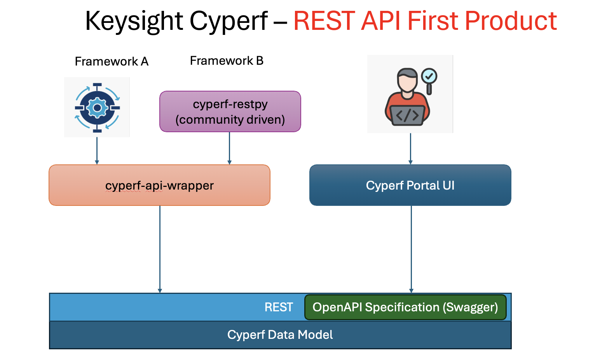
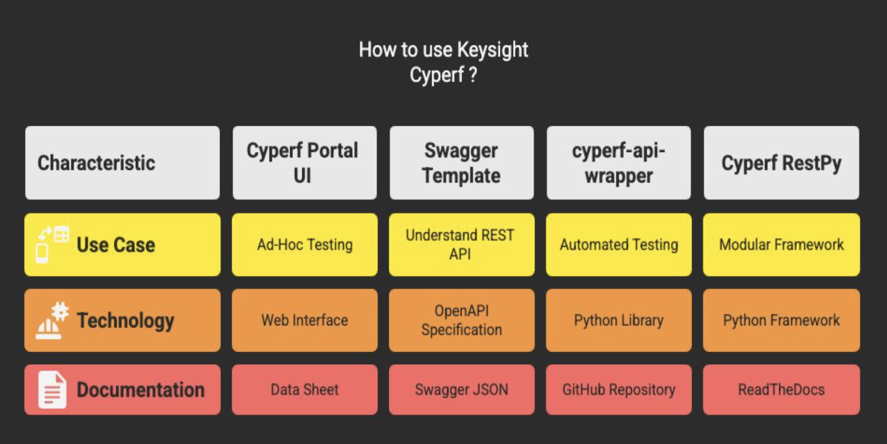
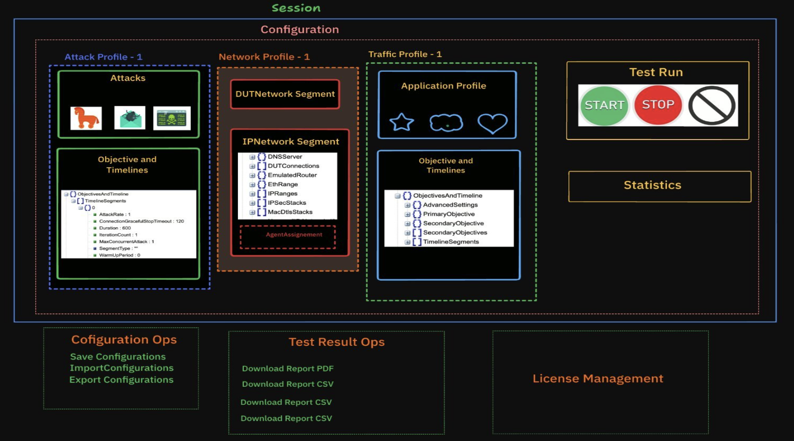
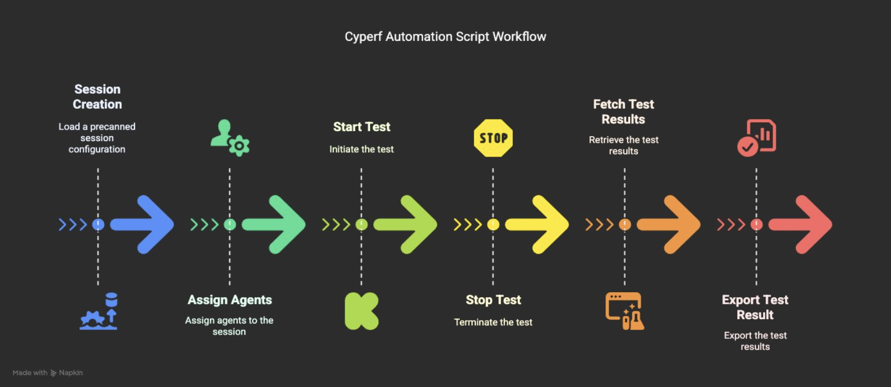

Everything you need to automate, deploy, and run CyPerf tests
Official Documentation
Get CyPerf & tools
Deploy
Install and configure
Precanned Cyperf Configurations
Explore patterns & use cases
Python API Wrapper SDK
Browse documentation
Custom Framework
cyperf-restpy community SDK
Video Tutorials
Watch & learn CyPerf



